MyFavoriteAlbums requires you to have R and RStudio downloaded onto your computer. If R and RStudio are not already downloaded onto your computer, download them by following the RStudio Desktop Downloading Instructions.
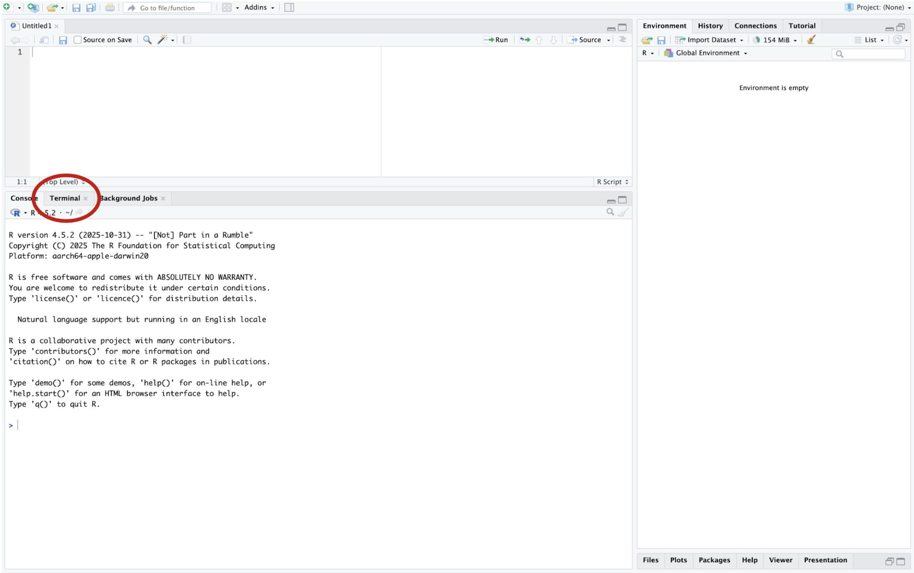
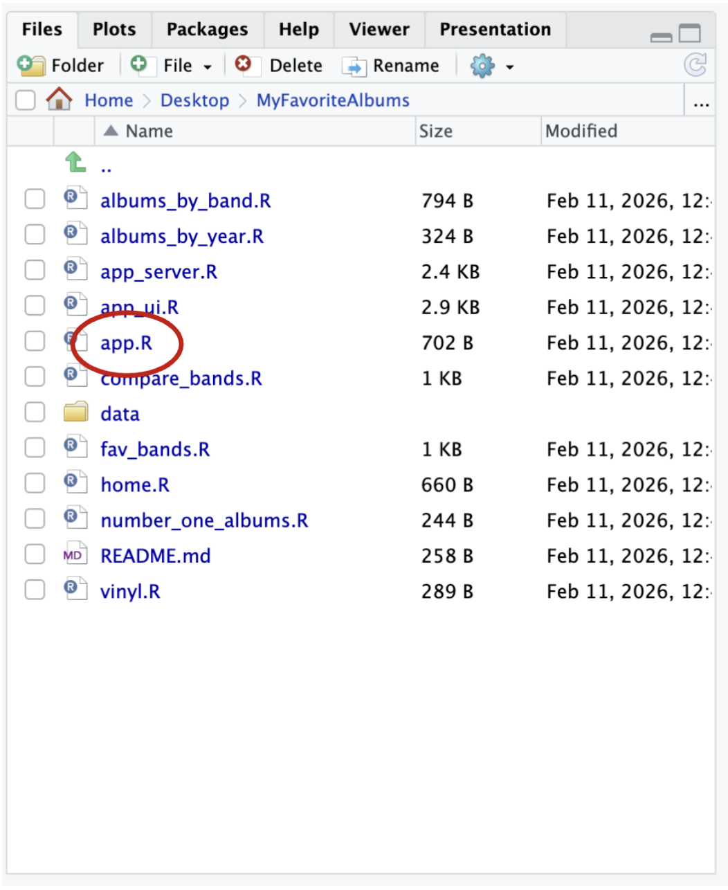
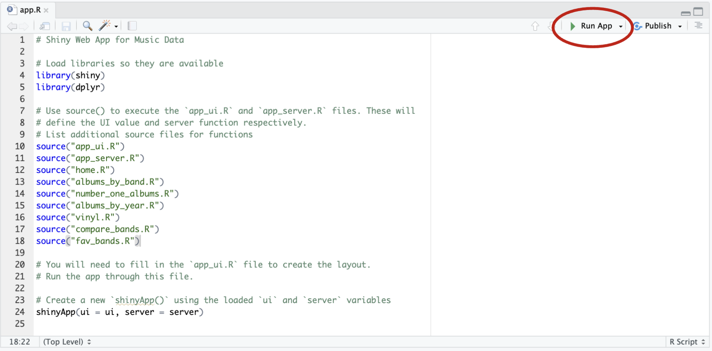
To add new functionality to MyFavoriteAlbums, you must have a basic understanding of R. For this tutorial, we will be creating a new function that will allow users to view a bar chart that displays the number of albums that were rated for each year in the data set.
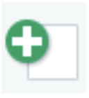
button and selecting R Script.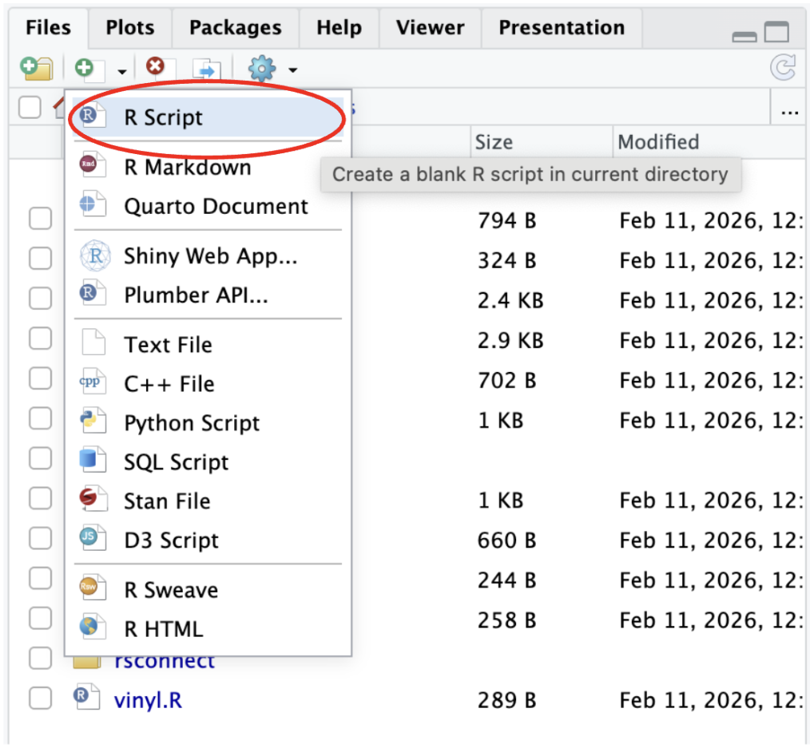
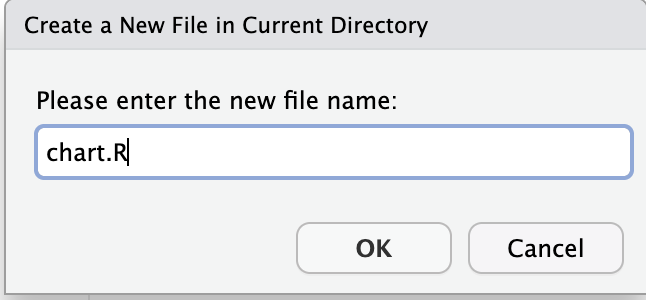
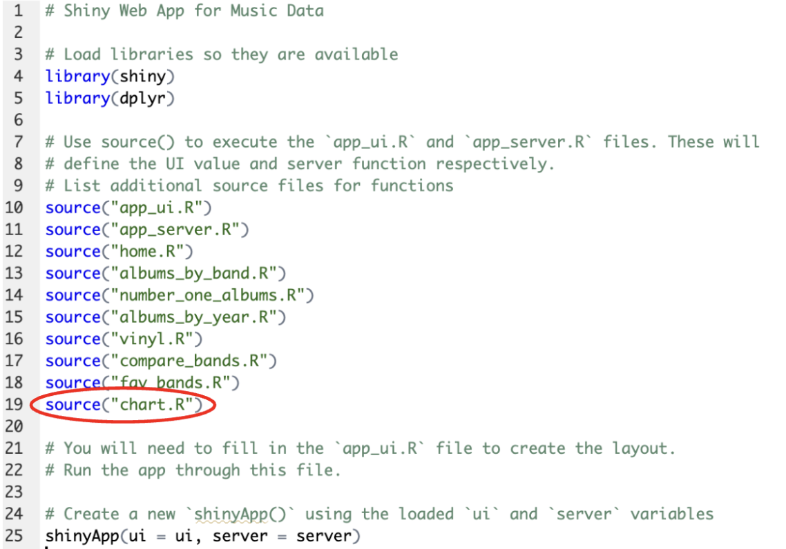
library(ggplot2)
albums_by_year_chart <- function(album_data) {
# Count albums per year
year_counts <- as.data.frame(table(album_data$Year))
colnames(year_counts) <- c("Year", "Count")
year_counts$Year <- as.numeric(as.character(year_counts$Year))
# Peak year
peak_year <- year_counts$Year[which.max(year_counts$Count)]
peak_count <- max(year_counts$Count)
# Plot
p <- ggplot(year_counts, aes(x = factor(Year), y = Count)) +
geom_bar(stat = "identity", fill = "steelblue") +
geom_bar(
data = subset(year_counts, Year == peak_year),
stat = "identity",
fill = "red"
) +
xlab("Year") +
ylab("Number of Albums") +
ggtitle(paste0(
"Albums Rated by Year (Most Rated: ",
peak_year, " with ", peak_count, ")"
)) +
theme_minimal() +
theme(axis.text.x = element_text(angle = 90))
print(p)
}When the albums_by_year_chart function is pasted into your chart.R file, it should look like this:
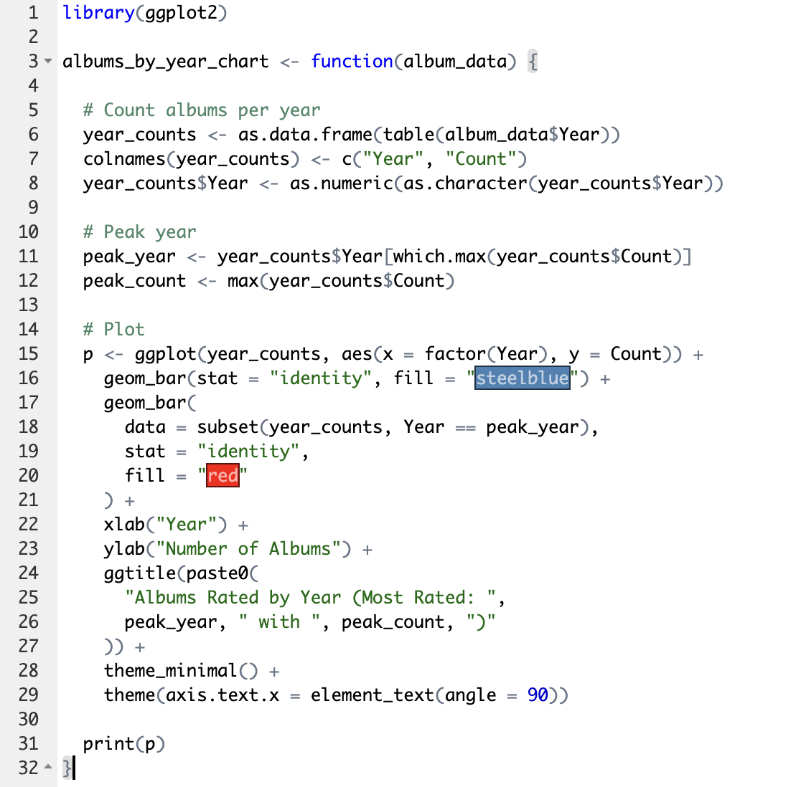
The albums_by_year_chart function creates a bar chart of the number of albums that were rated for each year in the data set and stores it in the year_counts dataframe. The bar chart is created using ggplot2 which creates a bar for each year in the data set that has an album rated. The year with the most albums rated is highlighted in red.
output$year_chart <- renderPlot({
albums_by_year_chart(album_data)
})When the output code is pasted into your app_server.R file, it should look like this:
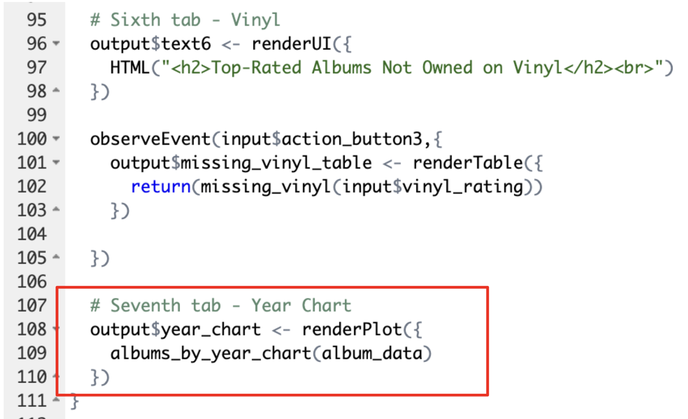
This code tell the server to render the bar chart used in chart.R. The albums_by_year_chart function is defined in chart.R and the data from our CSV file is passed to the function as album_data.
When creating a new server function:
tabPanel(
"Year Chart",
plotOutput("year_chart")
)When the tabPanel code is pasted into your app_UI.R file, it should look like this:
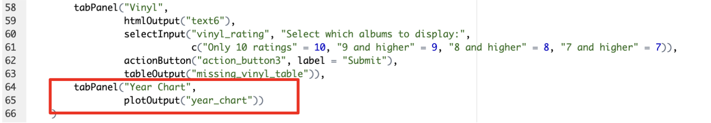
This code creates a new tab called Year Chart in MyFavoriteAlbums and displays the HTML output from the year_chart object in the app_server.R file.
When creating a new UI tab:
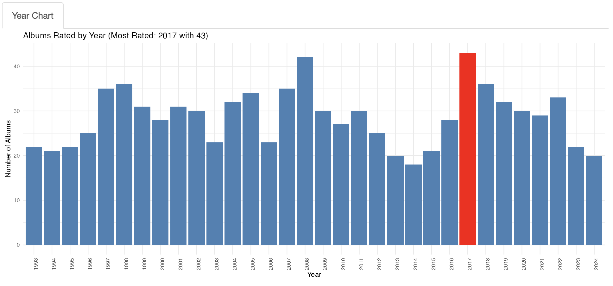
If you would like to explore more dplyr and ggplot functionality, check out the dplyr documentation and the ggplot2 documentation to learn about more ways you can use these packages to perform statistical analysis on your album rating data.